令和2年度（R2）計算問題
測量士補試験の計算問題 11 問。紙と鉛筆で解いてから「答えと解説」を開いてください。関数の値は試験の巻末の関数表を使います。
No.3数学
次のa～cの各問の答えとして最も近いものの組合せはどれか。次の中から選べ。
ただし，円周率π＝3.14とする。
なお，関数の値が必要な場合は，巻末の関数表を使用すること。
a．30°11′26″を10進法に換算すると幾らか。
b．120°をラジアンに換算すると幾らか。
c．三角形ABCで辺AB＝5.0 m，辺BC＝7.0 m，辺AC＝4.0 mとしたとき，∠ABCの角度は幾らか。
- a=30.19055°／b=1.05ラジアン／c=44°
- a=30.19055°／b=2.09ラジアン／c=34°
- a=30.19055°／b=2.09ラジアン／c=44°
- a=30.61666°／b=1.05ラジアン／c=34°
- a=30.61666°／b=2.09ラジアン／c=44°
答えと解説
答え 2
a 30°11′26″ を 10 進法に 分と秒を度に直します（60′ ＝ 1°、3,600″ ＝ 1°）。
26″ ＝ 26 ÷ 3,600 ＝ 0.00722…°
30°11′26″ ＝ 30 ＋ 0.18333 ＋ 0.00722 ＝ 30.19055°
b 120° をラジアンに 180° が π ラジアンなので、度に π ÷ 180 を掛けます。
c 角 ABC 3 つの辺が分かっていて角を出すときは、余弦定理を使います。
＝ (25 ＋ 49 − 16) ÷ 70
＝ 58 ÷ 70 ≒ 0.82857
関数表で cos 34° ＝ 0.82904、cos 35° ＝ 0.81915 なので、角 B はおよそ 34° です。
No.7多角
図7に示すとおり，新点Aの標高を求めるため，既知点Bから新点Aに対して高低角α及び斜距離Dの観測を行い，表7の結果を得た。新点Aの標高は幾らか。最も近いものを次の中から選べ。
ただし，既知点Bの器械高iBは1.40 m，新点Aの目標高fAは1.60 m，既知点Bの標高は350.00 m，両差は0.10 mとする。また，斜距離Dは気象補正，器械定数補正及び反射鏡定数補正が行われているものとする。
なお，関数の値が必要な場合は，巻末の関数表を使用すること。
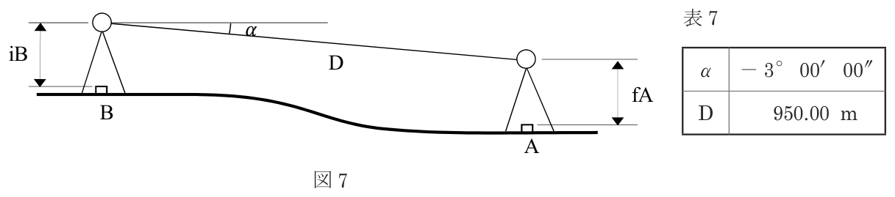
- 297.38 m
- 300.08 m
- 300.18 m
- 300.38 m
- 303.38 m
答えと解説
答え 3
B の標高から順に積み上げます。B の器械の高さ 1.40 m だけ上がり、そこから視準線（見通す線）に沿って下り、最後に A で目標の高さ 1.60 m だけ下がると、A の標高です。
高低角は、水平から上下に測った角です。−3° なので下向き。斜距離 D は斜めの長さなので、下がった高さは D × sin 3° です。
両差は、地球の丸みと光の曲がりによる高さの食いちがいです。標高の分かっている点から測ったときは、足します。
No.11水準
図11は，水準点Aから固定点（1），（2）及び（3）を経由する水準点Bまでの路線を示したものである。この路線で1級水準測量を行い，表11に示す観測結果を得た。再測すべき観測区間はどれか。次の中から選べ。
ただし，往復観測値の較差の許容範囲は，Sを観測距離（片道，km単位）としたとき，2.5 mm√Sとする。
なお，関数の値が必要な場合は，巻末の関数表を使用すること。
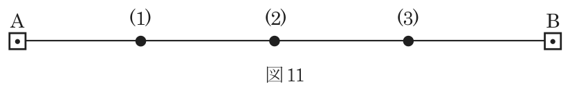
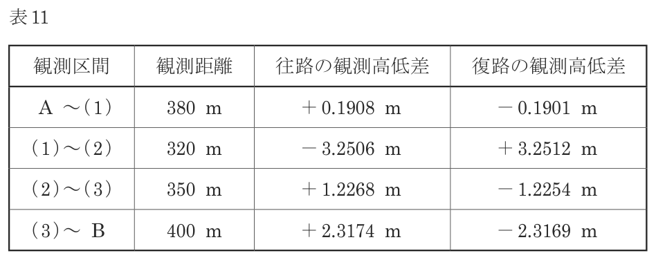
- A～（1）
- （1）～（2）
- （2）～（3）
- （3）～B
- 再測の必要はない
答えと解説
答え 3
較差は、行き（往路）と帰り（復路）で測った高低差の食いちがいです。帰りは符号が逆になるので、往路と復路を足したものが較差になります。
(1)～(2) −3.2506 ＋ 3.2512 ＝ 0.0006 m ＝ 0.6 mm
(2)～(3) 1.2268 − 1.2254 ＝ 0.0014 m ＝ 1.4 mm
(3)～B 2.3174 − 2.3169 ＝ 0.0005 m ＝ 0.5 mm
許容範囲 2.5√S と比べます。√ を出さなくても、「較差 ÷ 2.5」を 2 乗して S（km）と比べれば同じことです。
(1)～(2) 0.6 ÷ 2.5 ＝ 0.24 0.24² ≒ 0.06 ＜ 0.32
(2)～(3) 1.4 ÷ 2.5 ＝ 0.56 0.56² ≒ 0.31 ＜ 0.35
(3)～B 0.5 ÷ 2.5 ＝ 0.20 0.20² ＝ 0.04 ＜ 0.40
どの区間も許容範囲の中です。でも、これで終わりではありません。水準点 A から水準点 B までの全体でも確かめます。
全体の較差 ＝ 0.7 ＋ 0.6 ＋ 1.4 ＋ 0.5 ＝ 3.2 mm
3.2 ÷ 2.5 ＝ 1.28 1.28² ≒ 1.64 ＞ 1.45 → 許容範囲を超える
全体が超えているので測り直しが要ります。較差がいちばん大きい (2)～(3) の 1.4 mm が、全体を超えさせている一番の原因なので、ここを再測します。
No.13水準
公共測量における1級水準測量では，使用する標尺に対して温度の影響を考慮した標尺補正を行う必要がある。公共測量により，水準点A，Bの間で1級水準測量を実施し，表13に示す結果を得た。標尺補正を行った後の水準点A，B間の観測高低差は幾らか。最も近いものを次の中から選べ。
ただし，観測に使用した標尺の標尺改正数は20℃において＋6.0×10⁻⁶ m/m，膨張係数は＋1.5×10⁻⁶/℃とする。
なお，関数の値が必要な場合は，巻末の関数表を使用すること。
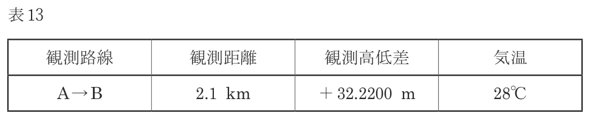
- ＋32.2185 m
- ＋32.2194 m
- ＋32.2198 m
- ＋32.2206 m
- ＋32.2215 m
答えと解説
答え 4
標尺（高さを読む物差し）の目盛りには、わずかな狂いがあります。標尺改正数は 1 m あたりの狂いを直す量（20 ℃ のとき）、膨張係数は温度 1 ℃ で 1 m あたりどれだけ伸びるかです。10⁻⁶ は 100 万分の 1 なので、1 m あたりでは 6.0 μm や 1.5 μm になります（1 μm ＝ 0.000001 m）。
1 m あたりの補正 ＝ 6.0 ＋ 1.5 × 8 ＝ 6.0 ＋ 12.0 ＝ ＋18.0 μm
高低差 32.22 m 分 ＝ 18 × 32.22 ≒ 580 μm ＝ 0.00058 m
補正後の高低差 ＝ 32.2200 ＋ 0.00058 ≒ ＋32.2206 m
標尺で読んだのは高さなので、掛けるのは高低差の 32.22 m。距離の 2.1 km は使いません。
No.14地形
図14は，ある道路の縦断面を模式的に示したものである。この道路において，トータルステーションを用いた縮尺1/500の地形図作成を行うため，標高125 mの点Aにトータルステーションを設置し点Bの観測を行ったところ，高低角－30°，斜距離86 mの結果を得た。また，同じ道路上にある点Cの標高は42 mであった。点Bと点Cを結ぶ道路は，傾斜が一定でまっすぐな道路である。
このとき，点B，C間の水平距離を300 mとすると，点Bと点Cを結ぶ道路とこれを横断する標高60 mの等高線との交点Xは，この地形図上で点Cから何cmの地点か。最も近いものを次の中から選べ。
なお，関数の値が必要な場合は，巻末の関数表を使用すること。
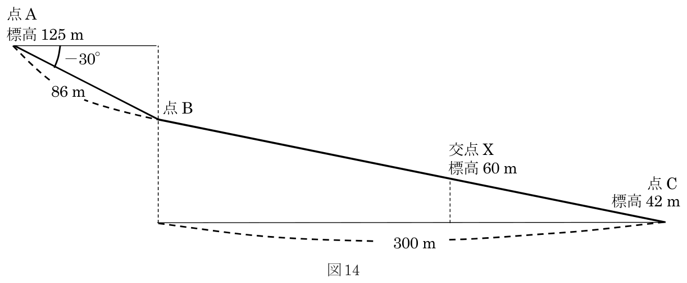
- 8.6 cm
- 13.5 cm
- 16.2 cm
- 27.0 cm
- 33.0 cm
答えと解説
答え 4
まず B の標高。A から高低角 −30°（下向き）に斜距離 86 m なので、下がった高さは 86 × sin 30°。
B の標高 ＝ 125 − 43 ＝ 82 m
C から B まで一定の傾きで上るので、C から X までの水平距離は標高差の比で出ます。
X と C の標高差 ＝ 60 − 42 ＝ 18 m
C→X の水平距離 ＝ 300 × 18 ÷ 40 ＝ 135 m
縮尺 1/500 では、実際の 1 m が地図上の 2 mm（1,000 mm ÷ 500）です。
No.16写真
数値地形モデルの標高値の点検を，現地の5地点で計測した標高値との比較により実施したい。各地点における数値地形モデルの標高値と現地で計測した標高値は表16のとおりである。標高値の精度を点検するための値σは幾らか。式16を用いて算出し，最も近いものを次の中から選べ。
なお，関数の値が必要な場合は，巻末の関数表を使用すること。
σ＝√{（（地点1の標高値の差）²＋（地点2の標高値の差）²＋…＋（地点Nの標高値の差）²）／N} ……式16
N：計測地点の数
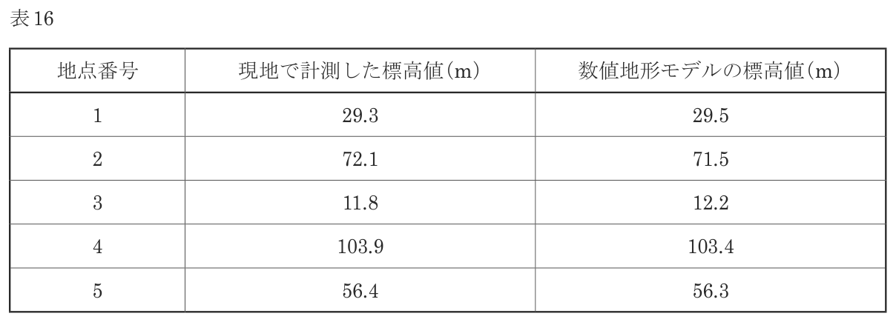
- 0.16 m
- 0.18 m
- 0.35 m
- 0.40 m
- 0.60 m
答えと解説
答え 4
数値地形モデルは、地面の高さを数値で持ったデータです。現地で測った標高とどれだけちがうかを地点ごとに出し、式 16 のとおり「2 乗して、足して、N で割って、√」の順に計算します。2 乗するので、差は大きさだけ出せば足ります。
地点 2 72.1 − 71.5 ＝ 0.6
地点 3 12.2 − 11.8 ＝ 0.4
地点 4 103.9 − 103.4 ＝ 0.5
地点 5 56.4 − 56.3 ＝ 0.1
5 で割る ＝ 0.82 ÷ 5 ＝ 0.164
σ ＝ √0.164
√ は、選択肢を 2 乗して比べます。
0.164 にいちばん近いのは 0.40² → σ ≒ 0.40 m
No.19写真
画面距離10 cm，画面の大きさ26,000画素×17,000画素，撮像面での素子寸法4 μmのデジタル航空カメラを用いて鉛直空中写真を撮影した。撮影基準面での地上画素寸法を15 cmとした場合，標高0 mからの撮影高度は幾らか。最も近いものを次の中から選べ。
ただし，撮影基準面の標高は500 mとする。
なお，関数の値が必要な場合は，巻末の関数表を使用すること。
- 3,250 m
- 3,750 m
- 4,250 m
- 4,750 m
- 5,250 m
答えと解説
答え 3
図の 2 つの三角形（レンズの上と下）は相似なので、「素子の大きさ ： 画面距離 ＝ 地上の大きさ ： 撮影基準面からカメラまでの高さ H」です。画面距離は、レンズから撮像面までの長さ。単位を m にそろえます。
H ＝ 0.1 × 0.15 ÷ 0.000004 ＝ 0.015 ÷ 0.000004 ＝ 3,750 m
撮影基準面は標高 500 m にあるので、標高 0 m からの高さは 500 m 高くなります。
No.21地図
国土地理院は，過去に起きた津波，洪水，火山災害，土砂災害などの自然災害の情報を伝える新たな地図記号「自然災害伝承碑」を電子地形図25000などに掲載する取組を行っている。
図21は，電子地形図25000の一部（縮尺を変更）である。この図にある自然災害伝承碑の経緯度で最も近いものを次のページの中から選べ。
ただし，表21に示す数値は図の中にある地図記号の経緯度を表している。また，図21では自然災害伝承碑の地図記号を破線の円で囲んでいる。
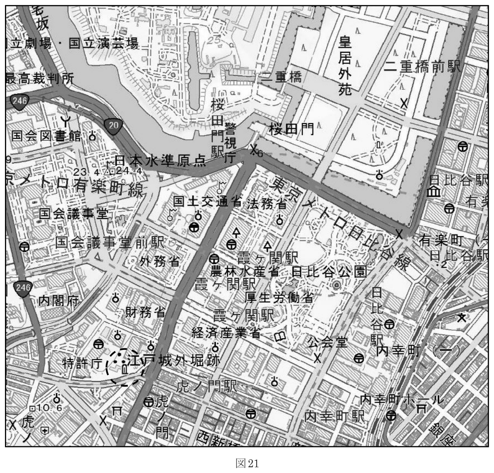
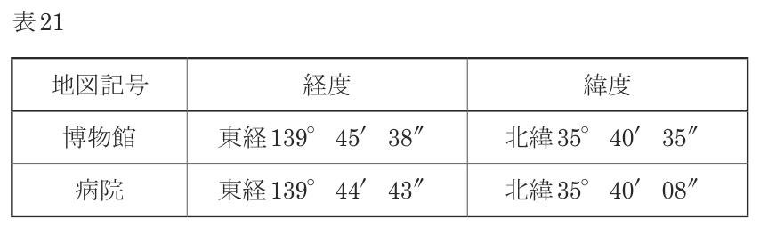
図の出典：国土地理院「電子地形図25000」（測量士補試験の問題に掲載されたもの）
- 東経139°44′49″ 北緯35°40′20″
- 東経139°44′54″ 北緯35°40′14″
- 東経139°44′54″ 北緯35°40′26″
- 東経139°45′31″ 北緯35°40′14″
- 東経139°45′50″ 北緯35°40′41″
答えと解説
答え 2
図 21 の中から地図記号を探します。博物館は屋根と柱のある建物の形（右上）、病院は盾の形の中に十字（左下）、自然災害伝承碑は点線の丸の中にある縦長の石碑の形です。図の右へ行くほど経度が大きく、上へ行くほど緯度が大きくなります。
病院と博物館の差を表 21 から出し、定規で測った長さの比で、自然災害伝承碑の位置を割り出します。
緯度の差 40′35″ − 40′08″ ＝ 27″ （図の上で縦 73.7 mm）
自然災害伝承碑は、病院から東へ 24.6 mm、北へ 18.9 mm です。
緯度 27″ × 18.9 ÷ 73.7 ≒ 6.9″ → 40′08″ ＋ 6.9″ ＝ 40′14.9″
最も近いのは、東経 139°44′54″、北緯 35°40′14″（選択肢 2）です。
図の出典：国土地理院「電子地形図25000」（測量士補試験の問題に掲載されたもの）。赤・青の線と文字は当サイトが書き足しました
No.25応用
10年前に水平に整地した図25－1の土地ABCDにおいて,先日,水準測量を行ったところ，地盤が不等沈下していたことが判明した。観測点の位置関係及び沈下量は，図25－1及び表25に示すとおりである。盛土により，整地された元の地盤高に戻すには，どれだけの土量が必要か。図25－2の式①を用いて算出し，最も近いものを次のページの中から選べ。
ただし，盛土による新たな沈下の発生は考えないものとする。
なお，関数の値が必要な場合は，巻末の関数表を使用すること。
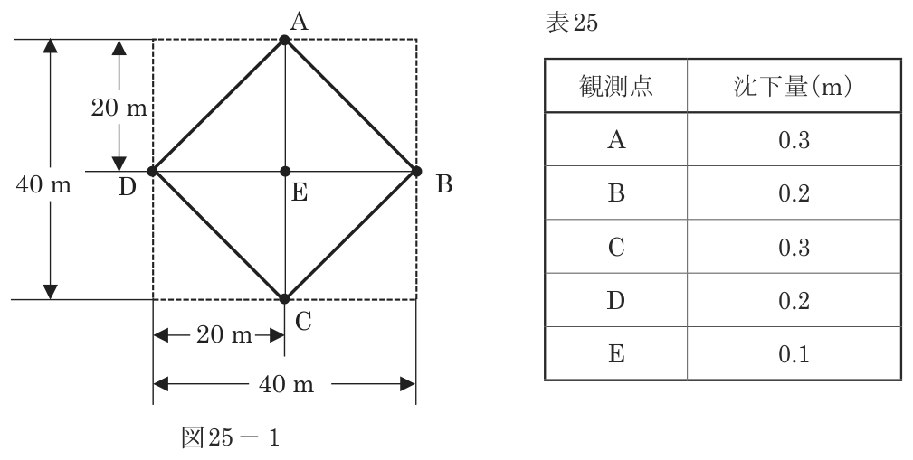
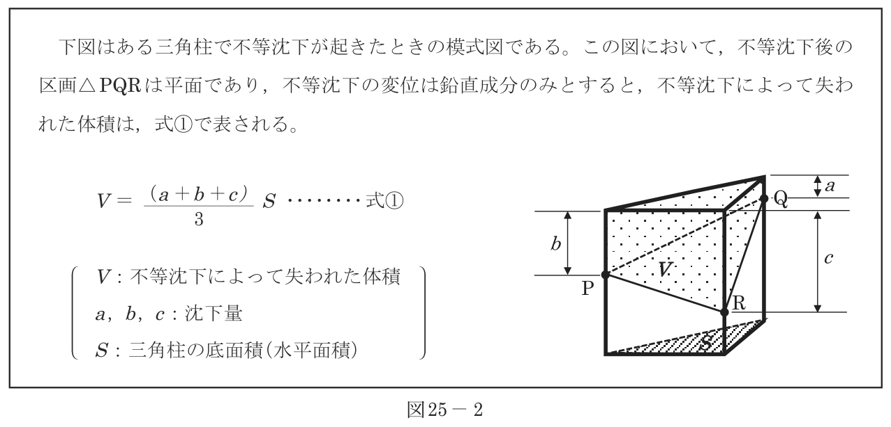
- 140 m³
- 160 m³
- 180 m³
- 200 m³
- 400 m³
答えと解説
答え 2
真ん中の E で 4 つの三角形に分け、それぞれに式①を使います。式①は「3 つの角の沈下量の平均 × 底面積」です。三角形はどれも直角をはさむ 2 辺が 20 m なので、面積は同じです。
角の沈下量も、どの三角形でも A か C の 0.3 m、B か D の 0.2 m、E の 0.1 m の組です。
三角形 1 つ分 ＝ 0.2 × 200 ＝ 40 m³
4 つ分 ＝ 40 × 4 ＝ 160 m³
No.26応用
図26に示すように，点Aを始点，点Bを終点とする円曲線の道路の建設を計画している。曲線半径R＝200 m，交角I＝112°としたとき，建設する道路の点Aから円曲線の中点Cまでの弦長は幾らか。最も近いものを次の中から選べ。
なお，関数の値が必要な場合は，巻末の関数表を使用すること。
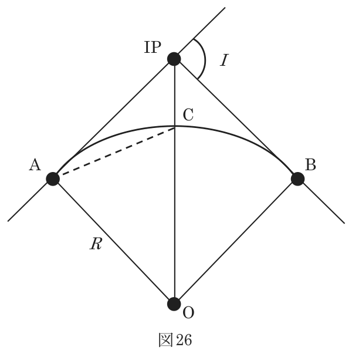
- 152 m
- 172 m
- 188 m
- 195 m
- 202 m
答えと解説
答え 3
接線と半径は直角に交わるので、円曲線の中心角（角 AOB）は交角 I と同じ大きさです。C は円曲線の真ん中なので、角 AOC はその半分になります。
角 AOC ＝ 112° ÷ 2 ＝ 56°
弦 AC は、A と C をまっすぐ結んだ長さです。OA も OC も半径 200 m なので、三角形 OAC は二等辺三角形。O から AC に垂線を下ろすと、28° の直角三角形が 2 つできます。
AC ＝ 2 × 93.9 ≒ 188 m
No.27応用
図27は，境界点A，B，C，Dの順に直線で結んだ土地を表したもので，土地を構成する各境界点の平面直角座標系（平成14年国土交通省告示第9号）に基づく座標値は表27のとおりである。
公共測量によって，土地ABCDの面積の90 %となる長方形AEFDに整えたい。このとき境界点FのX座標値は幾らか。最も近いものを次の中から選べ。
なお，関数の値が必要な場合は，巻末の関数表を使用すること。
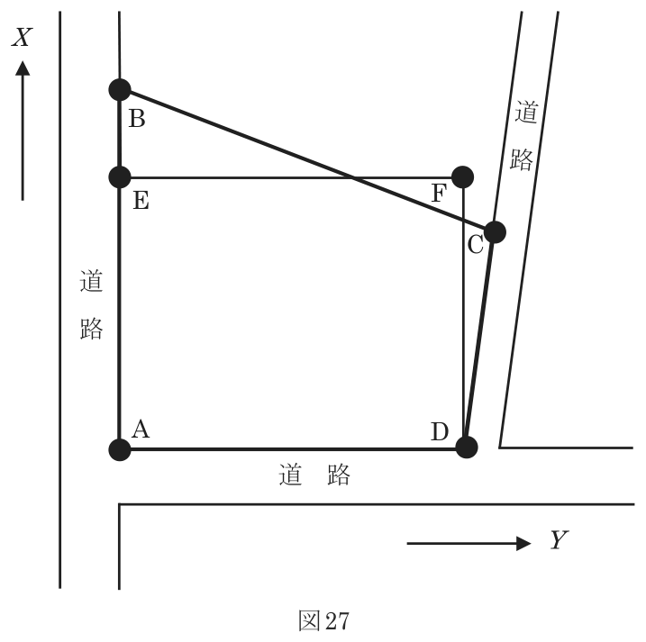
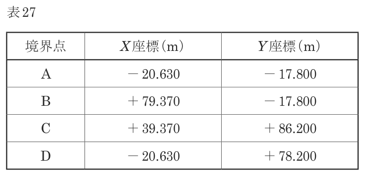
- ＋49.430 m
- ＋53.870 m
- ＋55.120 m
- ＋58.630 m
- ＋75.750 m
答えと解説
答え 3
X は北（上）、Y は東（右）です。A と B は Y が同じなので AB は南北の線、A と D は X が同じなので AD は東西の線です。四角形 ABCD を A と C を結ぶ線で 2 つの三角形に分けて面積を出します。
AD ＝ 78.200 − (−17.800) ＝ 96 m AD から C まで ＝ 39.370 − (−20.630) ＝ 60 m
② ＝ 96 × 60 ÷ 2 ＝ 2,880 m²
四角形 ABCD ＝ 5,200 ＋ 2,880 ＝ 8,080 m²
長方形 AEFD はその 90% で、横が AD の 96 m です。縦 AE を出せば、F の X 座標は A の X 座標に AE を足した値です。
AE ＝ 7,272 ÷ 96 ＝ 75.75 m
F の X 座標 ＝ −20.630 ＋ 75.750 ＝ ＋55.120 m